Discomarket: редизайн маркетплейса
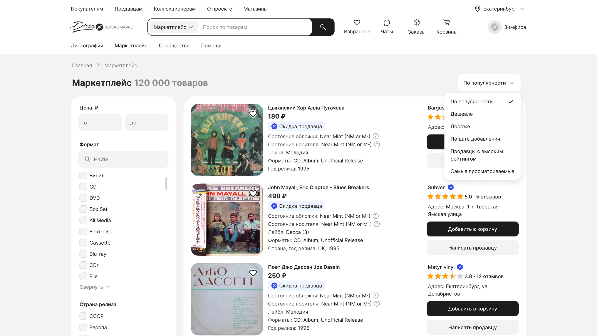
Контекст
К концу 2021 года запустили первый рабочий MVP российского аналога Discogs — платформы для коллекционеров винила и CD. В него вошли дискографии, сообщество пользователей и маркетплейс. На старте спрос был ограниченным, и команда уже сомневалась, стоит ли продолжать развитие продукта.
В 2022 году Discogs — главный конкурент Дискомаркета — ограничил доступ для российских пользователей. Коллекционеры, покупатели и продавцы лишились привычной площадки для купли-продажи. Аудитория начала искать альтернативы, и интерес к Дискомаркету заметно вырос: увеличились регистрации, размещение лотов и продажи. Однако вместе с ростом стало очевидно, что пользователи не удовлетворены некоторыми аспектами продукта — они жаловались на сложную навигацию, неудобный процесс купли-продажи, как следствие выходили с сайта, не завершали сделки или писали в поддержку. Через некоторое время компания ООО «Квазар» обратилась в студию fact.digital за глобальной переработкой площадки.
Цель бизнеса
- Увеличить оборот маркетплейса за счёт роста ключевых действий: размещения товаров, оформления заказов, завершённых сделок и повторных покупок.
- Повысить удовлетворённость пользователей и снизить долю негативных отзывов.
- Сократить обращения в поддержку.
Цель пользователя
Продавец: удобно разместить виниловые пластинки, найти заинтересованных покупателей и удобно управлять продажами.
Покупатель: найти нужную пластинку, оценить её состояние и продавца, безопасно оформить заказ.
Задача
Провести UX-аудит, найти слабые места и сделать UX/UI-переработку сайта: обновить визуальный стиль, унифицировать продуктовые страницы и заложить основу для масштабирования через UI Kit.
Аудитория
Продавцы и покупатели музыки на физических носителях.
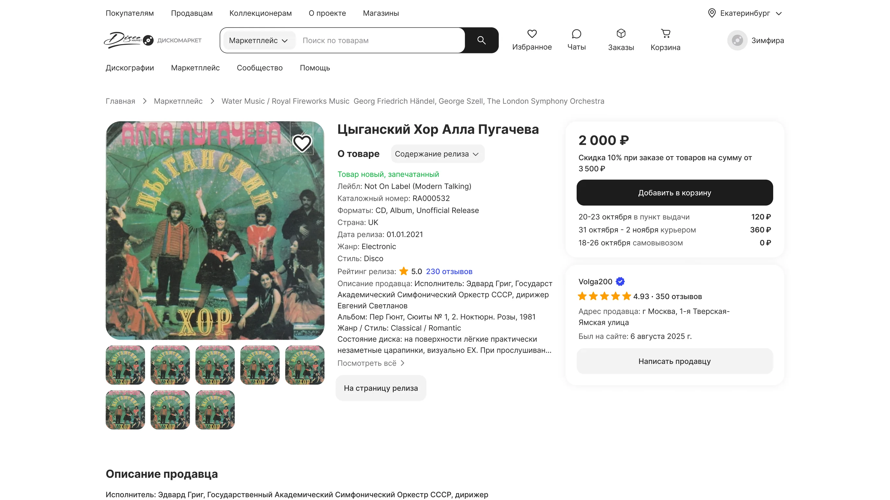
Процесс
Анализ
- Составила скрин-флоу текущего сайта. В итоге получилось найти места, где нарушается логика и не учтены возможные сценарии.
- Провела бенчмаркинг, чтобы посмотреть лучшие практики, понять общие черты у конкурентов, чтобы в концепте сохранить ожидаемые паттерны e-commerce направления для пользователей.
- Собрала и проанализировала обращения в службу поддержки, а также жалобы и пожелания пользователей в Telegram-канале Дискомаркета. Это помогло выявить повторяющиеся проблемы.
- Провела серию глубинных интервью с пользователями маркетплейса, чтобы изучить их workflow, лучше понять контекст использования продукта и выявить ключевые боли.
- Провела опросы в Telegram-канале, чтобы проверить частотность выявленных проблем, чтобы потом приоритизировать их.
Проектирование
- Построила CJM AS IS на основе исследований, чтобы отразить путь пользователя от первого касания до завершения сделки. Схема включала в себя этапы, действия, точки контакта, ожидания и мысли клиента, опыт клиента и эмоции.
- Вместе с проджектом мы сформировали гипотезы для каждой проблемы и провели приоритизацию бэклога с командой: в первую очередь брали то, что легче разработать и на что чаще жаловались. Приоритизированные гипотезы распределяли по релизам в формате USM.
- После CJM я описала идеальный сценарий клиента (CJM TO BE) и декомпозировала его на user flow.
- Перед прототипами собрала и утвердила мудборд, затем применила выбранный стиль на ключевых экранах. Так мы быстро согласовали визуал и зафиксировали дизайн-концепт.
- После отрисовки экранов я проверила решения на уровне прототипов и собрала обратную связь от лида.
Взаимодействие с командой
- Обсуждала решения с лидом, проджектом и разработчиками.
- Подготавливала макеты и описывала работу для передачи в разработку.
- Презентовали дизайн-решения вместе с лидом и защищали их перед командой и бизнес-заказчиком.
Финальные макеты
#1. Новая фича: минимальный заказ
Продавцы вручную отменяют заказы ниже минимальной суммы и тратят время на объяснения. Покупатели при этом проходят оформление впустую.
Если добавить минимальную сумму заказа, покупатели не смогут оформить неподходящий заказ, а продавцы будут тратить меньше времени на ручные отмены.
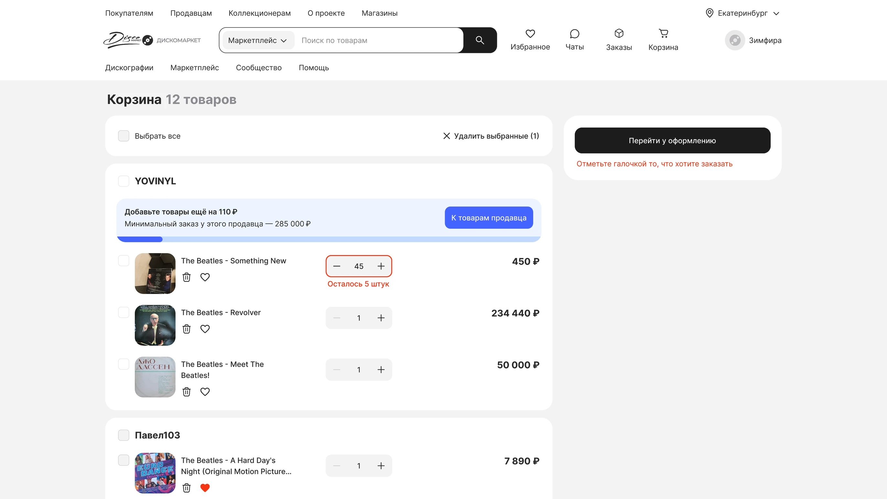
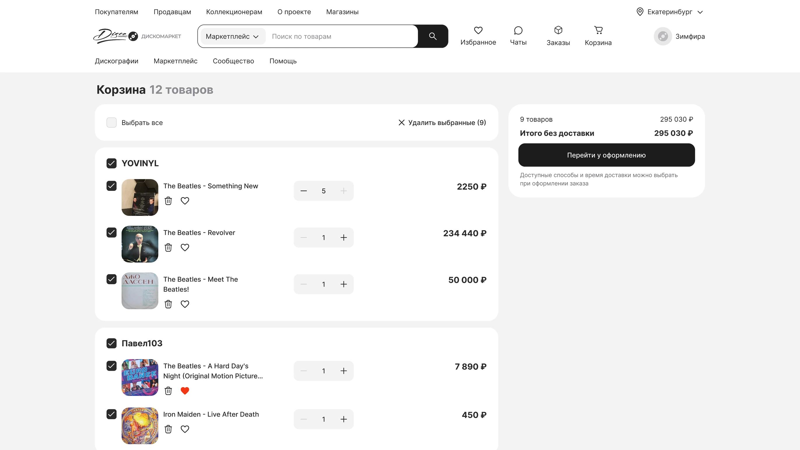
#2. Новая логика выбора товаров в корзине
В корзине нельзя выбрать отдельные товары для заказа. Пользователям приходится удалять лишние позиции, а итоговая сумма выбранных товаров не видна до оформления.
Если добавить выбор товаров в корзине, сценарий станет привычнее и понятнее, снизится трение перед оформлением и вырастет конверсия в чекаут.
До
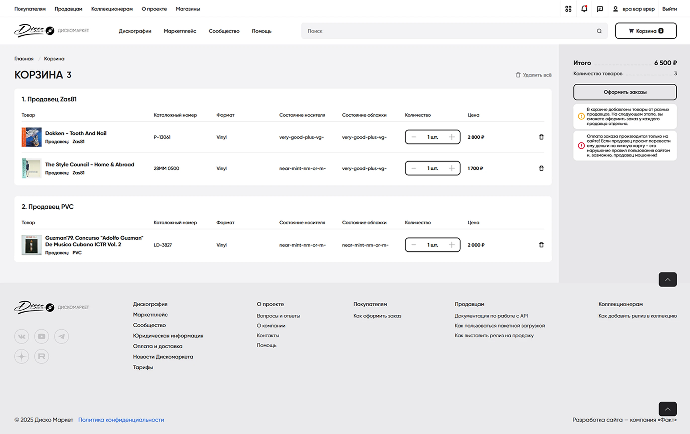
После
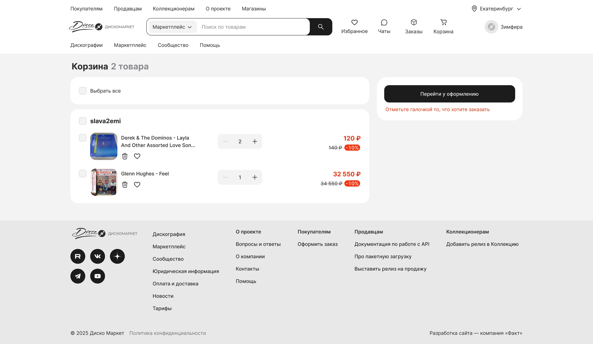
#3. Новая фича: интеграция с транспортными компаниями
Покупатель оформлял заказ без доставки, а продавец вручную рассчитывал её стоимость и добавлял к заказу. Это замедляло оплату, нагружало продавцов, увеличивало риск ошибок и делало путь покупателя менее прозрачным.
Если интегрировать оформление с ТК и считывать доставку автоматически, покупатель сразу увидит итоговую стоимость и быстрее перейдёт к оплате, а продавцы будут меньше работать вручную.
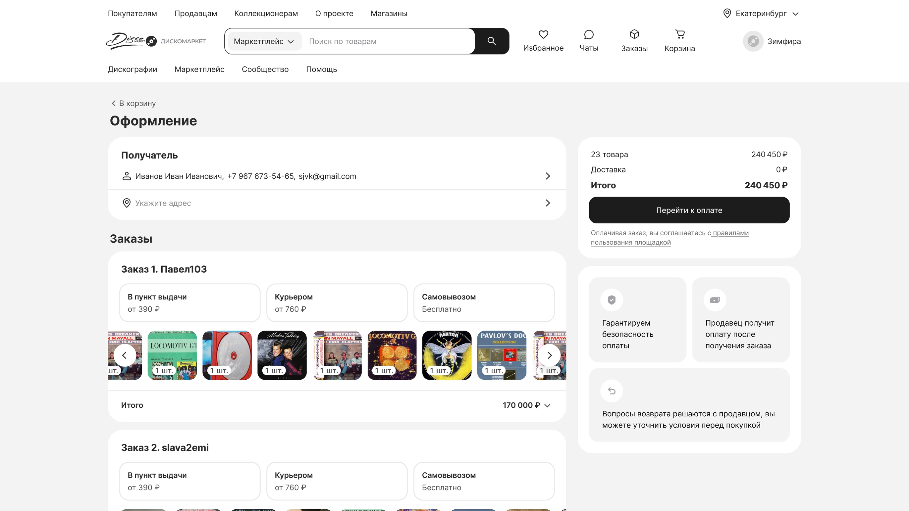
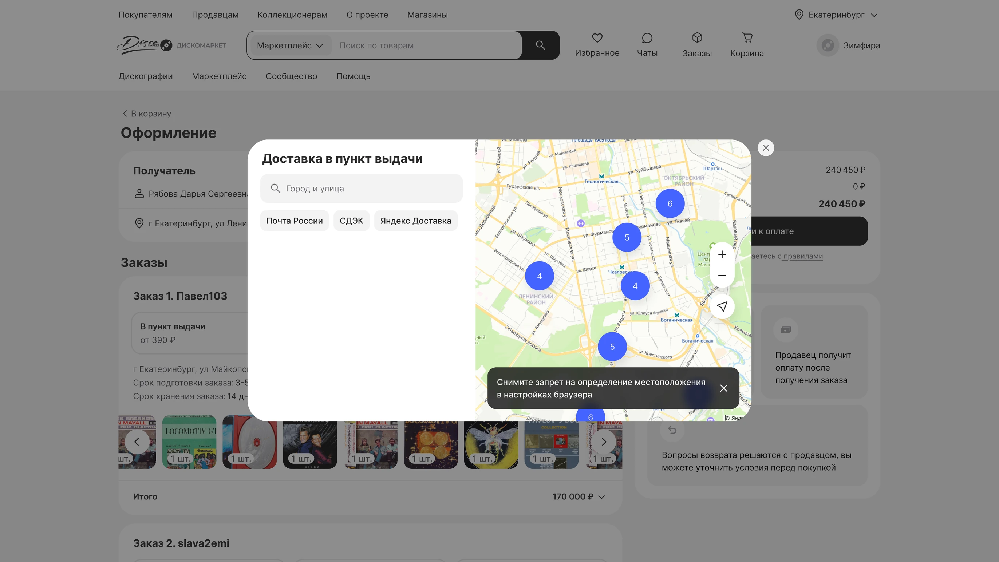
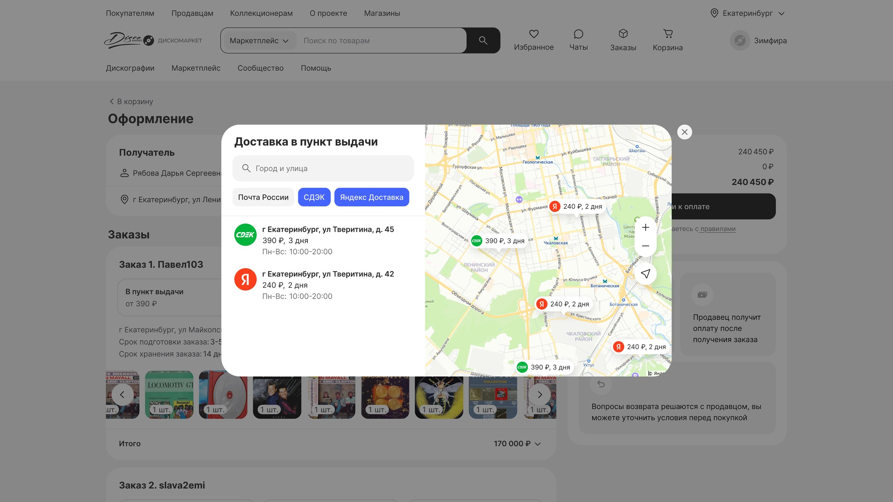
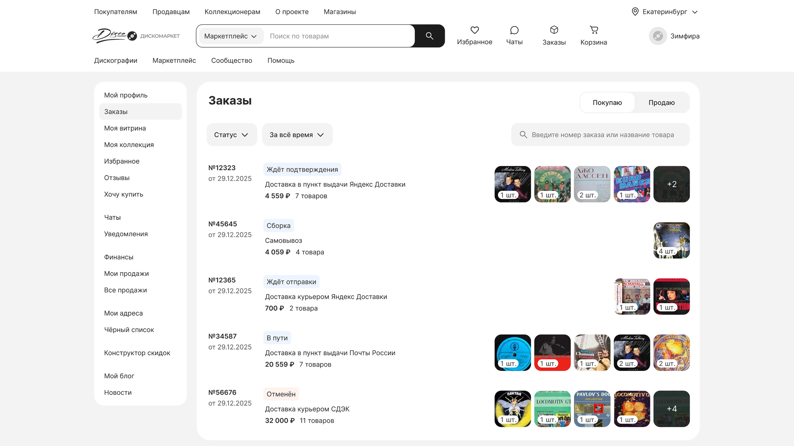
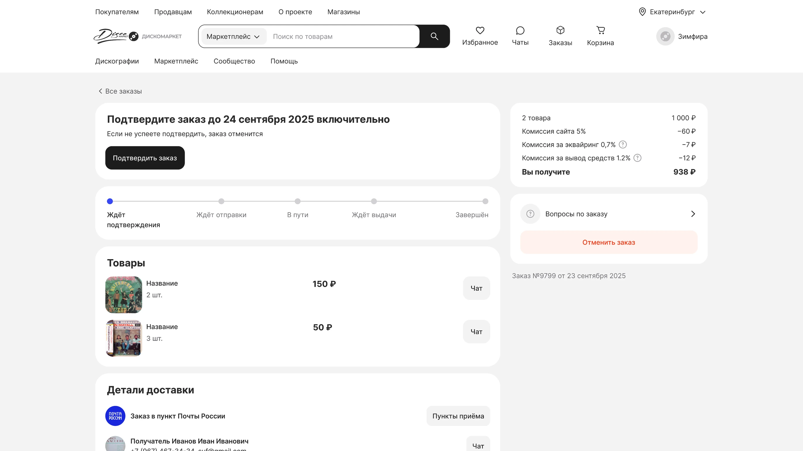
Ещё фичи
- Встроенный чат;
- Возможность указать несколько адресов самовывоза;
- Отзывы (разделение на табы: ждут отзыва, мои отзывы, отзывы обо мне);
- Сортировка отзывов: по оценке, по дате;
- Бейджи «скидка продавца» и «проверенный продавец»;
- Информация о магазине;
- Возможность увидеть, что применилась скидка продавца;
- Возможность указать срок подготовки и хранения заказа;
- Фильтры: только открытые магазины, только проверенные продавцы;
- Тултипы, чтобы посмотреть, что значат состояния VG, Mint и т.д. в карточке товара;
- Предпросмотр всех фото в карточке товара.
И многое другое.
UI Kit
Собирали токены сразу на переменных — это значительно сократило количество ручных правок, кастомных решений и неконсистентности. Для всех токенов сначала создавали примитивы, на основе которых затем строили семантику.
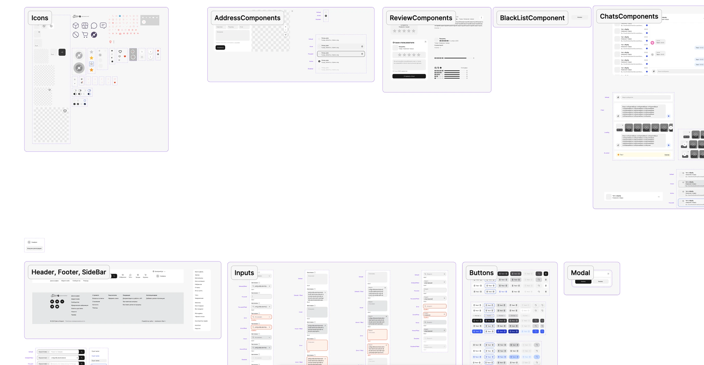
Результаты
После переработки мы опубликовали форму и пользователи положительно оценили обновлённый интерфейс. Многие отметили, что интерфейс стал чище, компактнее и удобнее.
Однако в первый месяц начали появляться жалобы на технические ошибки в новой версии. На момент моего ухода команда приняла решение временно откатить изменения и сфокусироваться на стабилизации переработки.
Буду рада подробнее рассказать о кейсе на собеседовании
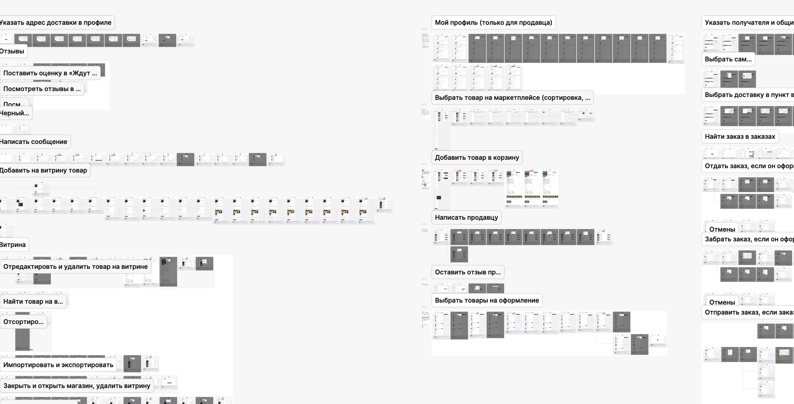